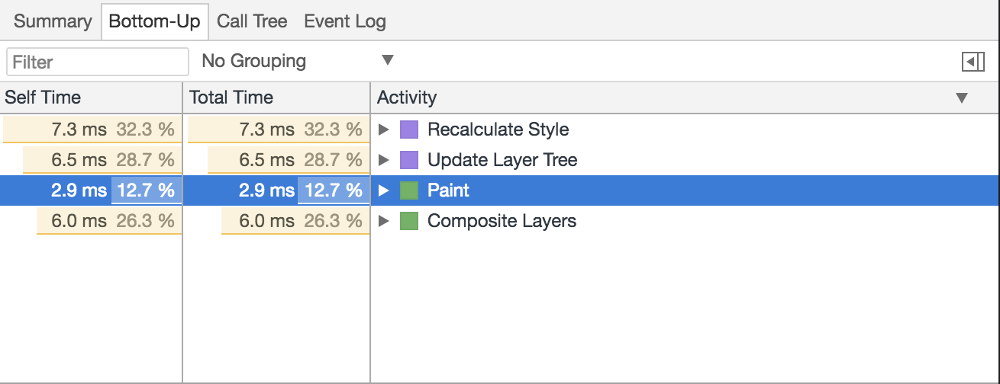

The higher up the waterfall a change occurs, the more work a browser must do before pixels can appear on the screen
box-shadow and border-radius
will slow down a layer paint
translateZ(0.1px) or another 3D transformwill-change is available, WITH CAUTIONToo many separate layers, especially nested ones, can cause jank